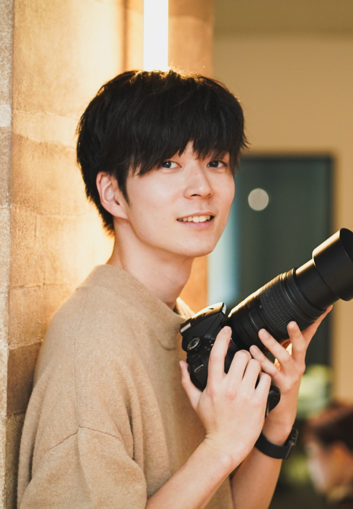

GREEITNG
代表挨拶

「そっと」に込めた思い
株式会社そっとは「一人一人に寄り添い憂を転じる」といった考えを大切にしています。
「寄りそう」ということは傍観者ではなく当事者として物事に向き合い共に解決することだと考えています。会社を通じて関わる人と真剣に向き合い、最高のパートナーとなることを志します。
代表 山本壮馬
経歴
関西学院大学社会学部を2020年に卒業。在学中に初めて自力で収益を得たことをきっかけに、「まずはやってみる」を信念として行動するようになる。大学在学中には非営利法人の代表を務めるが、事業運営の難しさを痛感。
人事の知見を深めるため企業に就職し、人事業務全般を経験。その後、独立して約2年間の個人事業を経て法人を設立。
どのような人にも寄り添う姿勢を大切にし、課題解決の最良のパートナーとなることを目指し
企業の人事支援・就活生支援・映像制作事業を軸に活動中。
CRED
信念
私たちの考える優しさとは
泣いている人がいたら、いきなり励ますのではなく。
その涙の理由を考えることだと思います。
優しさとは寄り添うこと。
寄り添うというのは目の前の人や物を見つめること。
それは一般化しないこと。
強さ：正解がない問いへどのくらい向き合えるか
正解がない問いへどのくらい向き合えるか。
社会には正解がなく、まだ説かれていない問いが多く存在します。
その中で答えを出すことを諦めることなく、放棄せずに自分の答えを導き、
決断できることこそが関わる人や社会へ良い影響をもたらす第一ステップだと考えています。
社会には正解がなく、まだ説かれていない問いが多く存在します。
その中で答えを出すことを諦めることなく、放棄せずに自分の答えを導き、
決断できることこそが関わる人や社会へ良い影響をもたらす第一ステップだと考えています。
賢さ：才能の使い方を誤らないこと
人は誰しも何か秀でているものを持っていると信じています。
その才能に踊らされず、自分自身が手綱を握り人生や仕事を生きることが大事だと考えます。
自他共に否定をせず建設的に物事を進められることこそが大事だと考えます。
その才能に踊らされず、自分自身が手綱を握り人生や仕事を生きることが大事だと考えます。
自他共に否定をせず建設的に物事を進められることこそが大事だと考えます。